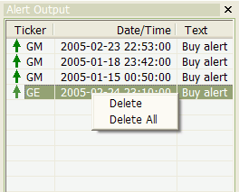

This context menu shows up when you click with the RIGHT mouse button on the Alert Output window (to show the Alert Output window, choose the Window->Alert Output option from the main AmiBroker menu)
Available options: